대기환경기사 (2004-03-07 기출문제)
1과목: 대기오염 개론
1. 다음 대기오염물질 중에서 1차 오염물질(Primary Pollutants)이 아닌 것은?
- HCl
- HC
- NaCl
- NOCl
(정답률: 알수없음)

2. 대기의 성분,조성 및 그에 따른 영향에 관한 설명으로 알맞지 않는 것은?
- 대기구성성분 중 농도가 가장 안정된 성분은 산소, 질소, 이산화탄소, 아르곤이다.
- 대기 중의 이산화질소, 암모니아성분의 농도는 쉽게 변화한다.
- 대기중에서 질소,산소를 제외하고 가장 큰 부피를 차지하고 있는 물질은 아르곤이다.
- 대기중 오존의 농도는 0.1 - 0.4ppm 정도로 지역별 오염도에 따라 일변화가 매우 크다.
(정답률: 알수없음)
3. 다음 중 불소화합물의 가장 큰 배출원은?
- 알미늄 제련용 전해로
- 시멘트 소성로
- 철광석 소결로
- 활성탄 제조용 반응로
(정답률: 알수없음)
4. ( )안에 알맞는 내용은?
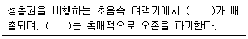
- NO
- Cl
- CO
- SO2
(정답률: 알수없음)
5. 대기의 열역학에 관한 설명 중 알맞지 않은 것은?
- 대기 중에서의 복사는 보통 0.1-100㎛ 파장영역에 속한다
- 대기 복사파장 영역 중 인간이 느낄수 있는 가시광선은 붉은색 0.36㎛에서 보라색 0.75㎛까지이다
- 복사는 매질이 없는 진공상태에서도 열을 전달할 수 있다
- 복사는 전자기장의 진동에 의한 파동형태의 에너지 전달이다.
(정답률: 알수없음)
6. 연기가 배출되는 상당한 고도까지도 매우 안정한 대기가 유지될 경우 형성되며 연기의 농도는 높지만 굴뚝 부근의 지표에서는 오히려 농도가 낮게 되는 연기의 형태로 가장 알맞는 것은?
- 환상형
- 원추형
- 구속형
- 부채형
(정답률: 알수없음)
7. 대기오염물질표준지수인 PSI에 관한 설명으로 틀린 것은?
- 대상항목은 SO2, CO, NO2, TSP, O3, 먼지와 아황산의 혼합물등 6개의 부지표로 구성되어 있다.
- 각각의 부지표 PSI를 구한 후 그 중 최대값이 PSI가 되며 이 때 최대값을 갖는 오염물질을 주요오염 물질이라 한다.
- 오염도는 깨끗한 단계인 0단계부터 극심한 오염상태를 나타내는 5단계까지 6단계로 나타낸다.
- 대중이 알기 쉽고 계산방법이 간단하며 과학적이고 일별, 시간별 변화를 쉽게 나타낼 수 있다.
(정답률: 알수없음)
8. 마찰이 작용하지 않는 자유대기(대기경계층 상부)에서 등압선이 곡선일 때 기압경도력과 전향력, 원심력이 평형을 이루어 부는 바람은?
- 지균풍
- 경도풍
- 선형풍
- 지상풍
(정답률: 알수없음)
9. Fick의 확산방정식(
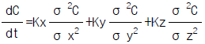
)을 실제 대기에 적용하기 위하여 일반적으로 추가하는 가정과 가장 거리가 먼 것은?- 오염물은 점원으로 부터 계속적으로 방출된다.
- 과정은 안정상태이다. 즉
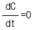
- 확산에 의한 오염물의 주이동방향은 X축이다.
- 풍속은 x, y, z좌표시스템내의 어느 점에서든 일정한다
(정답률: 알수없음)
10. 대기의 안정도를 나타내는데 적용하는 리차드슨의 수(Ri)를 나타낸 식으로 적절한 것은?(단, g:그 지역의 중력가속도,T:잠재온도,u:풍속,z:고도)
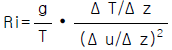
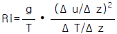
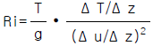
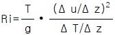
(정답률: 59%)
11. Gaussian 연기 확산 모델에 관한 설명으로 알맞지 않는 것은?
- 장단기적인 대기오염도 예측에 사용이 용이하다.
- 간단한 화학반응을 묘사할 수 있다.
- 선오염원에서 풍하 방향으로 확산되어가는 plume이 정규분포를 한다고 가정한다.
- 주로 평탄지역에 적용이 가능하도록 개발되어 왔으나 최근 복잡지형에도 적용이 가능토록 개발되고 있다.
(정답률: 알수없음)
12. 2000m 에서의 대기압력(최초의 기압)이 820mb이고, 온도가 5℃ 이며 비열비 K가1.4 일 때 온위(potential temperature)는? (단, 표준압력은 1000mbar )
- 278K
- 288K
- 294K
- 309K
(정답률: 알수없음)
13. 다음 그림은 고도에 따른 기온의 환경감율선을 나타낸 것이며 대기가 가장 안정한 상태를 나타내는 온도 구배는? (단, 점선은 건조단열감율선이다.)
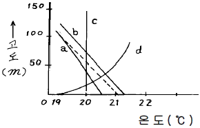
- a
- b
- c
- d
(정답률: 알수없음)
14. 대기중에서 광학스모그 생성에 기여하는 탄화수소류 중 광화학 활성이 가장 강한 것은?
- 파라핀계 탄화수소
- 올레핀계 탄화수소
- 아세틸렌계 탄화수소
- 방향족 탄화수소
(정답률: 알수없음)
15. 이산화질소(NO2)의 1.0 V/V ppm 에 상당하는 W/W ppm값은? (단, 0℃, 1.0 기압, 공기밀도 1.293 kg/m3 )
- 1.58
- 1.67
- 1.86
- 1.96
(정답률: 알수없음)
16. 다환 방향족 탄화수소(PAH)에 관한 설명으로 알맞지 않은 것은?
- 대부분 공기역학적 직경이 2.5㎛ 미만인 입자성 물질이다.
- 석탄,기름,쓰레기,또는 각종 유기물질의 불완전연소가 일어나는 동안에 형성된 화학물질 그룹을 말한다.
- 고리형태를 갖고 있는 방향족 탄화수소로서 암을 유발하며 일반적으로 대기환경내로 방출되면 수개월에서 수년동안 존재한다.
- 물에 쉽게 용해되므로 강우정도에 따른 영향이 크며 쉽게 휘발되지 않아 토양오염의 원인이 된다.
(정답률: 60%)
17. 대기 오염원 영향 평가방법중 수용모델에 관한 설명으로 알맞지 않는 것은?
- 기초적인 기상학적 원리를 적용, 미래의 대기질을 예측하여 대기오염제어 정책 입안에 도움을 준다.
- '모델링'이라는 협의의 개념보다는 대기오염물질의 물리화학적 분석과 각종 응용통계분석까지를 포함한 광의의 개념으로 이용되고 있다.
- 모델의 분류로는 오염물질의 분석방법에 따라 현미경 분석법과 화학분석법으로 구분한다.
- 측정자료를 입력자료로 사용하므로 시나리오 작성이 곤란하다.
(정답률: 알수없음)
18. 시골에서 분진의 농도를 측정하기 위하여 여과지를 통하여 공기를 0.15m/sec의 속도로 12시간 동안 여과시킨 결과 깨끗한 여과지에 비해 사용된 여과지의 빛 전달율이 80% 이었다면 1000m 당 Coh는?
- 0.2
- 0.6
- 1.1
- 1.5
(정답률: 알수없음)
19. 지구규모로 볼 때 년간 일산화탄소를 가장 많이 배출하는 발생원은?
- 테르펜류의 산화
- 자동차(휘발유차)
- 클로로필의 분해
- 공업(정유정제, 제철소 등)
(정답률: 알수없음)
20. 멕시코의 포자리카에서 발생한 대기오염사건의 주요원인 물질은?
- 아황산가스
- 황화수소
- 불화수소
- 염화수소
(정답률: 알수없음)
2과목: 연소공학
21. 중유연소 가열로의 배기가스를 분석한 결과 용량비로 질소:80%, 탄산가스:12%, 산소:8%의 결과치를 얻었다. 이 경우의 공기비는?
- 1.2
- 1.4
- 1.6
- 2.0
(정답률: 알수없음)
22. 불꽃 점화기관에서의 연소과정 중 생기는 노킹현상을 효과적으로 방지하기 위한 기관 구조에 대한 설명과 가장 거리가 먼 것은?
- 3원촉매시스템을 사용한다.
- 연소실을 구형(circular type)으로 한다.
- 점화플러그는 연소실 중심에 부착시킨다.
- 난류를 증가시키기 위해 난류생성 pot를 부착 시킨다
(정답률: 알수없음)
23. 중유의 원소조성은 탄소: 88%, 수소: 12%이다. 이 중유를 완전 연소시킨 결과 중유 1kg당 건조 배기가스량이 12.5Nm3이었다면, 건조 배기가스중의 CO2의 농도(V/V%)는?
- 8.1%
- 13.1%
- 16.8%
- 19.5%
(정답률: 알수없음)
24. 연소반응에서 반응속도상수 k는 압력과 상관이 없고 온도의 함수로 나타낸 식은?
- 이상기체상태식
- 아레니우스식
- 샤르식
- 반데르발스식
(정답률: 알수없음)
25. 유류버너중 회전식버너에 관한 설명으로 틀린 것은?
- 유량은 2-300L/hr이며 비교적 좁은 각도의 짧은 화염을 나타낸다.
- 분무매체는 기계적 원심력과 공기이다.
- 부하변동이 있는 중소형 보일러용으로 사용된다.
- 분무각도는 45° - 90° 이며 회전수는 5000 - 6000rpm 범위이다.
(정답률: 알수없음)
26. C,H,S의 중량비가 각각 80%, 15%, 5%인 중유를 공기비 1.1로 완전 연소시킬 때 발생되는 이론건조 연소가스중의 SO2농도(ppm)은? (단, 중유중의 S성분은 모두 SO2로 된다.)
- 약 3000
- 약 3500
- 약 4000
- 약 4500
(정답률: 알수없음)
27. (CO2)max의 값이 가장 높을 때는 어느 조건인가?
- 실제공기량의 연소조건일 때
- 공기부족의 조건일 때
- 공기과잉의 조건일 때
- 이론공기량 조건일 때
(정답률: 알수없음)
28. 탄소 85%, 수소 15%된 경유를 공기과잉 계수 1.1로 연소 했더니 탄소 1%가 검댕(그을음)으로 된다. 건조 배기가스 1Nm3중 검댕의 농도(g/Nm3)는?
- 약 0.72
- 약 0.86
- 약 1.72
- 약 1.86
(정답률: 알수없음)
29. 메탄(CH4)을 공기중에서 완전 연소시킬 때 이론 연소공기의 질량대 연료의 질량비(이론 연소공기의 질량/연료의 질량, kg/kg)는?
- 17.2
- 18.1
- 19.4
- 21.5
(정답률: 알수없음)
30. 완전연소에 가장 많은 이론공기량이 요구되는 가스는? (단, 가스는 순수가스임, Nm3/Nm3)
- 에탄
- 아세틸렌
- 메탄
- 에틸렌
(정답률: 알수없음)
31. CH4 92%, O2 4% 등으로 조성된 가스 1Nm3을 연소 하기 위하여 필요한 이론적 공기량(Nm3)은?
- 약 7.6
- 약 8.6
- 약 9.6
- 약 10.6
(정답률: 알수없음)
32. 열적 NOx(thermal NOx)의 생성억제 방안과 가장 거리가 먼 것은?
- 희박예혼합연소를 함으로써 최고 화염온도를 1800K 이하로 억제한다.
- 물의 증발잠열과 수증기의 현열상승으로 화염열을 빼앗아 온도상승을 억제한다.
- 화염의 최고온도를 저하시키기 위해서 화염을 분할 시키기도 한다.
- 배기가스에 암모니아를 투입하고, 400∼600℃에서 촉매와 접촉시켜 제어한다.
(정답률: 알수없음)
33. 메탄의(CH4) 고발열량은 55.5MJ/㎏이다. 저발열량은? (단, 상온에서 수증기의 증발잠열은 2.44MJ/㎏이다.)
- 53.28MJ/㎏
- 52.06MJ/㎏
- 51.62MJ/㎏
- 50.01MJ/㎏
(정답률: 알수없음)
34. 액체연료에 관한 내용과 가장 거리가 먼 것은?
- 저장, 운반이 용이하며 배관공사 등에 걸리는 비용도 적게 소요된다.
- 완전연소시 다량의 과잉공기가 필요하므로 연소장치가 대형화되는 단점이 있다.
- 단위질량당의 발열량이 커, 화력이 강하다.
- 액체연료는 비교적 저가로 안정하게 공급되고 품질에도 큰 차가 없다는 장점이 있다.
(정답률: 알수없음)
35. COM(coal oil mixture), 즉 혼탄유 연소 특징 중 알맞지 않는 것은?
- COM은 주로 석탄과 중유의 혼합연료이다.
- 배출가스중의 NOX, SOX, 분진농도는 미분탄 연소와 중유연소 각각인 경우 농도가중 평균 정도가 된다.
- 화염길이가 중유연소인 경우에 가까운 것에 대하여 화염안정성은 미분탄연소인 경우에 가깝다.
- 중유보다 미립화 특성이 양호하다.
(정답률: 알수없음)
36. 최적 연소부하율이 100,000㎉/m3-hr인 연소로를 설계하여 발열량이 5,000㎉/㎏인 석탄을 시간당 200kg 연소한다면 필요한 연소로의 연소실 용적은? (단, 열효율은 100%이다.)
- 200m3
- 100m3
- 20m3
- 10m3
(정답률: 알수없음)
37. 메탄의 이론연소 온도는? (단, 메탄,공기의 공급온도는 20℃, 메탄 저위발열량은 8600[kcal/Sm3], CO2, H2O(g), N2 의 평균정압 몰비열(상온-2100℃사이)은 각각 13.1,10.5,8.0[kcal/kmol℃])
- 약 1280℃
- 약 1630℃
- 약 2⑤0℃
- 약 2350℃
(정답률: 알수없음)
38. 등유(C10H20) 2kg 완전연소시킬 때 필요한 이론 공기량은?
- 22.8 Sm3
- 28.5 Sm3
- 36.6 Sm3
- 39.2 Sm3
(정답률: 알수없음)
39. 연소시 가연물의 구비조건으로 틀린 것은?
- 화학적으로 활성이 강할 것
- 활성화 에너지가 클 것
- 표면적이 클 것(기체＞액체＞고체)
- 열전도도가 적을 것(열전도율: 고체＞액체＞기체 )
(정답률: 28%)
40. 가연성 가스의 폭발범위에 따른 위험도 증가 요인으로 가장 알맞는 것은?
- 폭발하한농도가 높을수록 위험도가 증가하며 폭발 상한과 폭발하한의 차이가 작을수록 위험도가 커진다
- 폭발하한농도가 높을수록 위험도가 증가하며 폭발 상한과 폭발하한의 차이가 클수록 위험도가 커진다.
- 폭발하한농도가 낮을수록 위험도가 증가하며 폭발 상한과 폭발하한의 차이가 작을수록 위험도가 커진다
- 폭발하한농도가 낮을수록 위험도가 증가하며 폭발 상한과 폭발하한의 차이가 클수록 위험도가 커진다.
(정답률: 알수없음)
3과목: 대기오염 방지기술
41. 어떤 공장의 연마실에서 발생되는 배출가스의 먼지제거에 cyclone이 사용되고 있다. 유입폭이 30cm, 유효회전수 6회, 입구유입속도 8m/s로 가동중인 공정조건에서 10 μ m 먼지입자의 부분집진효율은 몇 %인가? (단, 먼지의 밀도는 1.6g/cm3, 가스점도는 1.75×10-4 g/cmㆍs, 가스밀도는 고려하지 않음 )
- 38
- 51
- 73
- 82
(정답률: 알수없음)
42. Rosin-Rammler 입도분포식은 R(%)=100exp(-β (dp)n )로 표시된다. 위 식에서 입경 dp와 적산분포 R을 얻은 실험 데이터로부터 어떤 먼지의 입경지수 n값을 얻으려고 한다 위 실험데이터로부터 직선그래프 x축 대 y축을 어떻게 그려야 하는가?
- log dp 대 log R
- log β 대 log dp
- log dp 대 log (2-log R)
- log (2-log β ) 대 log dp
(정답률: 알수없음)
43. 전기집진장치에서 분진의 비저항이 높을 경우 발생하는 현상과 가장 거리가 먼 것은?
- 분진과 집진판의 결합력이 낮아 분진이 가스중으로 재비산된다.
- 심각한 역코로나 현상이 발생한다.
- 전하가 쉽게 집진판으로 전달되지 않는다.
- 가스 중 분진입자의 이온화와 이동현상을 감소시킨다.
(정답률: 알수없음)
44. 다음중 송풍기에 대한 법칙중 옳지 않은 것은? (Q: 풍량, N: 회전수, W: 동력, D: 날개직경, Δ P: 정압)
- W1/N13 = W2/N23
- Q1/N1 = Q2/N2
- W1/D13 = W2/D23
- Δ P1/N12 = Δ P2/N22
(정답률: 알수없음)
45. 시멘트 공장에서 분진을 제거하기 위하여 길이: 4.2m, 높이: 4.8m인 집진판을 평행하게 설치한 집진기를 설치하였다. 판의 간격은 23cm 이며 평형판 사이로 농도가 11.4g/m3인 가스 68m3/min를 처리한다면 집진효율(%)은? (단, 전기집진기내 입자의 이동속도는 0.⑤8m/sec )
- 87.3
- 89.4
- 93.5
- 95.6
(정답률: 10%)
46. 배출가스별 처리시설 선정으로 적당하지 않은 것은?
- 질소산화물:충전탑을 사용한 가스세정장치
- 불소화합물:충전탑 또는 충전탑과 분무탑의 병용방식
- 분무도장분진:습식(수세식)또는 건식(여과식)처리 시설과 배기통
- 황화수소:알칼리를 사용한 충전탑식 흡수장치
(정답률: 알수없음)
47. 집진장치의 입구쪽의 처리가스유량이 300000Nm3/h, 분진농도가 15g/Nm3이고, 출구쪽의 처리된 가스의 유량은 3⑤000Nm3/h, 분진농도가 40mg/Nm3이었다. 이 집진장치의 집진율은 몇 %인가?
- 99.3
- 99.5
- 99.7
- 99.9
(정답률: 알수없음)
48. 직경이 30㎝, 높이가 10m 인 원통형 여과집진장치(여포)를 이용하여 배출가스를 처리하고자 한다. 배출가스량은 500m3/min이고, 여과속도는 3㎝/sec로 할 경우 필요한 여포는 최소 몇개인가?
- 25
- 30
- 35
- 40
(정답률: 알수없음)
49. 후드의 일반적인 흡인방법과 설치요령에 관한 내용으로 알맞지 않는 것은?
- 충분한 포착속도를 유지한다.
- 국부적인 흡인방식을 채택한다.
- 후드의 개구면적은 가능한 크게 한다.
- 후드를 가능하면 발생원에 근접시킨다.
(정답률: 알수없음)
50. 중유탈황방법중 기술적, 경제적으로 실현가능하여 현재 가장 많이 사용되고 있는 것은?
- 접촉산화 탈황법
- 접촉수소화 탈황법
- 석회석 탈황법
- 흡착 탈황법
(정답률: 알수없음)
51. 매시간 2.5ton의 중유를 연소하는 보일러의 배연 탈황에 수산화나트륨을 흡수제로 하여 부산물로서 아황산나트륨을 회수한다. 중유의 황분은 4.5%, 탈황율 95%로 하면 필요한 수산화나트륨의 이론적인 량은? (단, Na원자량: 23, 중유 황성분은 연소시 전량 SO2 전환, 표준상태기준)
- 약 270 kg/h
- 약 330 kg/h
- 약 380 kg/h
- 약 420 kg/h
(정답률: 알수없음)
52. 벤젠을 함유한 유해가스의 가장 일반적인 처리방법은?
- 건식산화법
- 촉매연소법
- 흡수법
- 접촉산화법
(정답률: 알수없음)
53. 일반적으로 가스의 처리속도는 1-3m/sec, 액가스비는 0.5-1.5ℓ /m3, 압력손실은 50-150mmH2O 정도로 대용량의 가스의 처리가 가능하며 미스트 발생이 적고 구조가 간단 하여 수용성 가스처리에 적합한 것은?
- 분무탑
- 벤츄리스크러버
- 사이크론 스크러버
- 제트 스크러버
(정답률: 알수없음)
54. 배출가스 중의 염소를 충전탑에서 물을 흡수액으로 사용하여 흡수시킬 때 효율이 80%이었다. 동일한 조건에서 95%의 효율을 얻기 위해 이론적으로 충전층의 높이를 몇 배로 하면 되는가?
- 2.36
- 2.14
- 1.86
- 1.57
(정답률: 알수없음)
55. 유해가스 처리의 충전탑(packed tower)에 대한 설명 중 틀린 것은?
- 충전탑은 충전물을 채운 탑내에서 액을 위에서 밑으로 흐르게 하고 가스는 아래에서 향류로 접촉시키는 액분산형 흡수장치이다.
- 가스의 유속이 증가하면 충전층 내에 액의 보유량이 증가하여 탑 위로 넘치게 되므로 가스유속은 범람(flooding)속도의 80~90%가 적당하다.
- 충전탑의 높이는 이동 단위수와 이동단위 높이의 곱으로 계산된다.
- 일반적으로 충전탑의 직경(D)와 충전제 직경(d)의 비 D/d가 8 - 10일 때 편류현상이 최소가 된다.
(정답률: 50%)
56. 일반적으로 더스트의 체적당 표면적을 비표면적이라 한다 구형입자의 비표면적을 알맞게 나타낸 것은?(단, d 는 구형입자의 직경 )
- 2/d
- 4/d
- 6/d
- 8/d
(정답률: 알수없음)
57. 송풍기 회전판 회전에 의하여 집진장치에 공급되는 세정액이 미립자로 만들어져 집진하는 원리를 가진 회전식 세정집진장치에서 직경이 10 cm인 회전판이 4300rpm으로 회전할 때 형성되는 물방울의 직경은 몇 ㎛인가?
- 93
- 104
- 208
- 316
(정답률: 알수없음)
58. 염소가스를 함유하는 배출가스에 50㎏의 수산화나트륨을 포함한 수용액을 순환 사용하여 100% 반응시킨다면 몇 ㎏의 염소가스를 처리할 수 있는가? ( 단, Cl의 원자량: 35.5 )
- 약 34㎏
- 약 44㎏
- 약 54㎏
- 약 64㎏
(정답률: 알수없음)
59. 어떤 질산공장에서 배기가스 중 NO2농도가 80 ppm 이었고, 처리가스량이 1,000 Sm3이었다면, CO에 의한 비선택적 접촉환원법으로 NO2를 처리하여 NO와 CO2로 만들자고 할 때, 필요한 CO의 양은?
- 0.04 Sm3
- 0.08 Sm3
- 0.16 Sm3
- 0.32 Sm3
(정답률: 63%)
60. 헨리의 법칙에 따른 유해가스가 물속에 2.0㎏ - ㏖/m3이 용해되어 있고 이 유해가스의 분압이 258.4㎜H2O이다. 이 유해가스의 분압이 38㎜Hg된다면 물속의 유해가스농도는?
- 1.0㎏ - ㏖/m3
- 2.0㎏ - ㏖/m3
- 3.0㎏ - ㏖/m3
- 4.0㎏ - ㏖/m3
(정답률: 알수없음)
4과목: 대기오염 공정시험기준(방법)
61. 입자상 물질중 Pb를 원자 흡광광도계를 이용 분석한 결과 다음과 같은 결과를 얻었다. Pb량(mg/Sm3)은 얼마인가?(단, 분석용시료용액: 100ml, 건조시료 가스량(표준상태) : 250ℓ , 시료용액 흡광도에 상당하는 Pb량 : 0.0125mgPb/ml 이다.)
- 1mg/Sm3
- 5mg/Sm3
- 10mg/Sm3
- 20mg/Sm3
(정답률: 알수없음)
62. 피토관으로 배출가스의 유속을 측정하였다. 배출가스 온도는 120℃, 동압확정에는 확대율이 10배되는 경사 마노미터를 사용하고 그 내부액은 비중이 0.85의 톨루엔을 사용하였다. 경사마노미터의 액주(液柱)로 동압은 45mm이었다. 측정점의 배출가스의 유속은 약 얼마인가?(단, 피토관의 계수: 0.9594, 공기밀도: 1.3kg/Sm3 )
- 8.0m/s
- 8.7m/s
- 9.5m/s
- 9.8m/s
(정답률: 알수없음)
63. 원자흡광분석에서 화학적 간섭을 피하기 위한 방법과 가장 거리가 먼 것은?
- 이온교환이나 용매추출 등에 의한 방해물질을 제거한다.
- 과량의 간섭원소를 첨가한다.
- 목적원소를 내부표준물질로 첨가한다.
- 간섭을 피하는 양이온, 음이온 또는 은폐제, 킬레이트제 등을 첨가한다.
(정답률: 알수없음)
64. 연료의 연소, 금속제련 또는 화학반응 공정 등에서 배출되는 굴뚝 배출가스 중의 일산화탄소 분석 방법에 대한 설명이다. 이중 틀린 것은?
- 비분산 적외선 분석법에 의한 분석시 정량범위는 0∼250ppm부터 0∼1%까지이다.
- 정전위 전해법에 의한 분석시 정량범위는 0∼20ppm부터 0∼3%까지이다.
- 이온크로마토그래프법에 의한 분석시 정량범위는 0.01% 이상이다.
- 가스크로마토그래프법에 의한 분석시 정량범위는 FID의 경우 0∼2000ppm이다.
(정답률: 알수없음)
65. 분석시료제조를 위하여 아세틸아세톤함유흡수액을 사용하는 분석대상가스는?
- 시안화수소
- 벤젠
- 비소
- 포름알데히드
(정답률: 알수없음)
66. 환경대기중에 부유하고 있는 입자상 물질을 여과지에 포집한 후 빛(파장 400nm)을 조사해서 빛의 두파장을 측정하여 입자상물질의 농도를 구하는 방법은?
- 감마선법
- 광산란법
- 광투과법
- 베타선법
(정답률: 알수없음)
67. 흡광광도 분석법에는 일반적으로 램버어트-비어(Lambert-beer)의 법칙을 이용한다. 이 법칙을 적용할 경우 다음 중 올바른 관계식은? (단, I0:입사광의 강도, C:농도, ε :흡광계수, It:투과광의 강도, ℓ :빛의 투과거리)
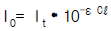
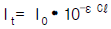
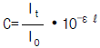
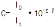
(정답률: 알수없음)
68. 환경오염공정시험법에서 페놀디술폰산법으로 분석할 수 있는 것은?
- 염화수소
- 일산화탄소
- 황산화물
- 질소산화물
(정답률: 알수없음)
69. 어느 산업장의 굴뚝에서 실측한 배출가스중 SO2 농도가 600ppm이었다. 이때 표준 산소농도는 6%, 실측한 산소농도는 8% 이었다면 이 산업장의 배출가스중의 보정된 SO2 농도는?
- 약 480ppm
- 약 520ppm
- 약 690ppm
- 약 760ppm
(정답률: 알수없음)
70. 다음중 분석시험에 있어 기재 및 용어 설명이 맞는 것은?
- "정확히 단다"라 함은 규정한 양의 전체를 취하여 분석용 저울로 0.3㎎까지 다는 것을 뜻한다.
- 시험조작중 "즉시"란 10초 이내에 표시된 조작을 하는 것을 뜻한다.
- "감압 또는 진공"이라 함은 따로 규정이 없는 한 10㎜Hg 이하를 뜻한다.
- 용액의 액성표시는 따로 규정이 없는 한 유리전극법에 의한 pH 미터로 측정한 것을 뜻한다.
(정답률: 알수없음)
71. 중화적정법으로 황산화물을 정량할 때 적정액으로 사용하는 N/10-NaOH 용액의 역가를 구하기 위한 표정에 사용하는 용액은?
- 황산용액
- 술파민산용액
- 붕산용액
- 초산바륨용액
(정답률: 알수없음)
72. 환경대기중의 아황산가스 주시험방법으로 수동인 것은?
- 용액전도율법
- 자외선형광법
- 파라로자닐린법
- 산정성수동법
(정답률: 알수없음)
73. 악취측정에 관한 설명으로 틀린 것은?
- 악취의 측정은 직접관능법으로 실시하는 것을 원칙으로 한다.
- 직접관능법 및 기기분석법에 의한 악취측정은 부지 경계선에서 실시하는 것을 원칙으로 한다.
- 공기희석관능법으로 악취를 측정하는 경우 사업장 안에 높이5m이상의 일정한 악취배출구외에 다른 악취 발생원이 없는 경우에는 일정한 배출구에만 채취한다
- 공기휘석관능법은 시료채취후 4시간 이내에 시험하여야 한다.
(정답률: 알수없음)
74. 다음은 굴뚝등에서 배출되는 배출가스중 염화수소를 질산은 적정법으로 측정 하고자 할 때 측정법에 대한 설명이다 틀린 것은?
- 시료가스중의 염화수소를 수산화나트륨 용액에 흡수시킨다
- 정량범위는 230 - 4600 vol ppm 정도이다
- 할로겐화물,시안화물등의 영향이 무시될 때 적합하다
- 적정은 티오시안산암모늄용액으로 한다
(정답률: 알수없음)
75. 배출가스 중의 불소화합물에 대한 흡광광도법의 측정법을 설명한 것이다. 이중 잘못 설명된 것은?
- 0.1N 수산화나트륨을 흡수액으로 사용한다.
- 정량범위는 HF로서 0.9∼1200ppm 이다.
- 란탄과 알리자린 콤플렉숀을 가하여 이때 생기는 색의 흡광도를 측정한다.
- 불소이온을 방해이온과 분리한 다음 묽은황산으로 pH 4 - 5로 조절한다.
(정답률: 알수없음)
76. 40.8mmH2O 은 몇 mmHg 인가?
- 15.1 mmHg
- 12.8 mmHg
- 7.5 mmHg
- 3.0 mmHg
(정답률: 34%)
77. 배출가스 중 CS2의 측정에 사용되는 흡수액은?
- 붕산 용액
- 수산화나트륨 용액
- 디에틸아민동 용액
- 질산암모늄 용액
(정답률: 알수없음)
78. 굴뚝등에서 배출되는 가스중의 크롬을 원자흡광광도법으로 측정하기 위한 분석용 시료용액을 제조하기 위한 회화 온도로 맞는 것은? (단, 전기로 기준)
- 200℃
- 300℃
- 500℃
- 600℃
(정답률: 37%)
79. 황산화물의 아르세나조Ⅲ법은 시료가스 중 황산화물의 농도 범위가 몇 ppm일 때 적용되는가? (단, 연소등에 따라 굴뚝 등에서 배출되는 배출가스 중의 황산화물을 분석하는 방법기준)
- 50∼700ppm
- 300∼1000ppm
- 500∼2000ppm
- 1000∼3000ppm
(정답률: 알수없음)
80. 비분산적외선분석법에서 분석계의 최고 눈금값을 교정하기 위하여 사용하는 가스는?
- 비교가스
- 제로가스
- 스팬가스
- 필터가스
(정답률: 알수없음)
5과목: 대기환경관계법규
81. 대기오염배출시설(공통시설) 기준으로 적절치 못한 것은?
- 용적 5m3 이상 또는 동력 3마력이상의 도장시설
- 동력 10마력이상의 분쇄시설
- 소각능력이 시간당 25kg이상의 적출물소각시설
- 소각능력이 시간당 25kg이상의 폐수소각시설
(정답률: 알수없음)
82. 대기오염물질 배출시설에서 배출되는 초과 배출부과금의 부과대상이 되는 오염물질의 종류로만 짝지어진 것은?
- 일산화탄소, 황산화물
- 염소, 디옥신
- 시안화수소, 이황화탄소
- 불소화합물, 납
(정답률: 알수없음)
83. 대기오염 경보단계중 중대경보가 발령되는 오염물질의 농도기준으로 알맞는 것은?
- 기상조건 등을 검토하여 해당 지역내 대기자동측정소의 오존농도가 0.5ppm 이상일 때
- 기상조건 등을 검토하여 해당 지역내 대기자동측정소의 오존농도가 0.7ppm 이상일 때
- 기상조건 등을 검토하여 해당 지역내 대기자동측정소의 오존농도가 1.2ppm 이상일 때
- 기상조건 등을 검토하여 해당 지역내 대기자동측정소의 오존농도가 1.5ppm 이상일 때
(정답률: 알수없음)
84. 방지시설을 거치지 아니하고 오염물질을 배출할 수 있는 공기조절장치, 가지 배출관등을 설치한 행위를 한 자에 대한 벌칙기준으로 적절한 것은?(단, 타법령에서 정한 시설로 배출시설설치허가를 받지 않은 경우)
- 2년이하의 징역 또는 1천만원이하의 벌금에 처한다
- 3년이하의 징역 또는 2천만원이하의 벌금에 처한다
- 5년이하의 징역 또는 3천만원이하의 벌금에 처한다
- 7년이하의 징역 또는 5천만원이하의 벌금에 처한다
(정답률: 알수없음)
85. 개선명령을 받은 경우로 개선하여야 할 사항이 배출시설 또는 방지시설인 경우 개선계획서에 포함되어야 하는 사항이 아닌 것은?
- 배출시설 또는 방지시설의 개선명세서 및 설계도
- 오염물질 등의 처리방식 및 처리효율
- 배출허용기준 초과사유 및 대책
- 공사기간 및 공사비
(정답률: 알수없음)
86. 대기배출시설 설치 사업자가 자가 측정에 관한 기록과 측정시 사용한 여과지 및 시료채취기록지의 보존기간은?
- 최종기재 및 측정한 날부터 3월로 한다.
- 최종기재 및 측정한 날부터 6월로 한다.
- 최종기재 및 측정한 날부터 1년로 한다.
- 최종기재 및 측정한 날부터 3년로 한다.
(정답률: 알수없음)
87. 조업정지가 공익에 현저한 지장을 초래할 우려가 있다고 인정되는 경우에 조업정지처분에 갈음하여 최대 얼마의 과징금을 부과 할 수 있는가?
- 5천만원
- 1억원
- 2억원
- 3억원
(정답률: 64%)
88. 대기 배출시설설치신고서에 첨부하여야 하는 서류로 틀린것은?
- 방지시설의 일반도
- 방지시설의 연간 유지관리계획서
- 배출시설 및 방지시설의 설치내역서
- 원료 사용량 및 오염물질등의 배출량 예측 내역서
(정답률: 알수없음)
89. 위임업무의 보고사항 중 업무내용이 '비산먼지발생대상사업신고현황'인 경우, 보고기일로 적절한 것은?
- 다음달 10일까지
- 매분기 종료후 15일 이내
- 매반기 종료후 15일 이내
- 다음 연도 1월 15일까지
(정답률: 알수없음)
90. 대기배출시설에서 배출되는 페놀화합물의 배출허용기준은 얼마인가?
- 10ppm 이하
- 5ppm 이하
- 3ppm 이하
- 2ppm 이하
(정답률: 알수없음)
91. 위반횟수별 부과계수를 산정하는 방법을 설명한 것 중 옳은 것은?
- 처음 위반한 경우에는
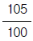
- 처음 위반한 경우에는
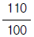
- 처음 위반한 경우에는
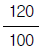
- 처음 위반한 경우에는
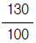
(정답률: 30%)
92. 다음 용어의 정의로 알맞지 않은 것은?
- 가스:물질의 연소,합성,분해시에 발생하거나 물리적 성질에 의하여 발생하는 기체상 물질
- 매연:연소시 발생하는 유리탄소를 주로 하는 미세한 입자상 물질
- 첨가제:탄소와 수소로 구성된 화학물질로 자동차연료에 첨가하여 자동차 성능을 향상시키는 것
- 먼지:대기중에 떠다니거나 흩날려 내려오는 입자상물질
(정답률: 알수없음)
93. 고체연료환산계수가 가장 큰 연료(kg)는?
- 무연탄
- 유연탄
- 코크스
- 목탄
(정답률: 알수없음)
94. 2002년 8월 4일에 제작된 자동차 배출가스 보증기간만료에 관한 설명으로 알맞는 것은?
- 기간이 도달하는 것을 기준으로 한다
- 주행거리가 도달하는 것을 기준으로 한다
- 기간 또는 주행거리중 나중 도달하는 것을 기준으로 한다
- 기간 또는 주행거리중 먼저 도달하는 것을 기준으로 한다
(정답률: 알수없음)
95. 공동방지시설을 설치하고자 하는 공동방지시설운영기구의 대표자가 시도지사에게 제출하여야 하는 서류로 알맞지 않는 것은?
- 공동방지시설의 위치도(축척 2만5천분의 1의 지형도를 말한다)
- 공동방지시설의 설치도면 및 오염물질 배출량예측서
- 사업장별 원료사용량 및 제품생산량을 기재한 서류와 공정도
- 공동방지시설의 운영에 관한 규약
(정답률: 알수없음)
96. 2001년 1월 1일부터 2002년 6월 30일까지 생산된 자동차의 종류에 속하지 않는 것은?
- 다목적자동차
- 중형자동차
- 이륜자동자
- 화물자동차
(정답률: 알수없음)
97. 비산먼지의 발생을 억제하기 위한 시설의 설치 및 필요한 조치에 관한 엄격한 기준에 해당되지 않는 것은?
- 건축물축조공사장은 청소장비를 갖추어 건물바닥을 주 1회 이상 청소하도록 할 것
- 싣거나 내리는 장소주위에 고정식 또는 이동식 물뿌림시설(물뿌림반경 7m이상, 수압 5kg/cm2 이상)을 설치할 것
- 공사장내 차량통행도로는 다른 공사에 우선하여 포장하도록 할 것
- 보관, 저장시설은 가능한 한 3면이 막히고 지붕이 있는 구조가 되도록 할 것
(정답률: 알수없음)
98. 대기환경기준 항목중 아황산가스를 측정하는 방법으로 적절한 것은?(단, 환경정책기본법 기준)
- 비분산적외선분석법
- 화학발광법
- 자외선형광법
- 베타선흡수법
(정답률: 알수없음)
99. 대기오염 방지시설이 아닌 것은?
- 오존산화에 의한 시설
- 응축에 의한 시설
- 토양미생물을 이용한 처리시설
- 이온교환시설
(정답률: 알수없음)
100. 특정대기유해물질이 아닌 것은?
- 이황화메틸
- 베릴륨 및 그 화합물
- 바나듐
- 1-3 부타디엔
(정답률: 알수없음)